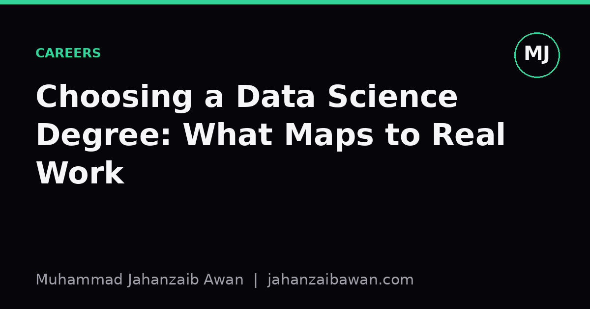

Choosing a Data Science Degree: What Maps to Real Work
A practical way to read a module list before you commit, so your timetable actually resembles the job you want afterwards.

Why the module list matters more than the course title
Course titles are marketing. Module lists are the actual product. I learned this the hard way while comparing programmes: two courses can both call themselves 'Data Science MSc' and share almost nothing underneath. One might spend three terms on statistical theory with a single applied project bolted on at the end. Another might be a rebadged software engineering course with a few weeks of pandas thrown in. Neither of those, on its own, resembles what a working data scientist actually does on a Tuesday afternoon.
What a working data scientist actually does, most of the time, is unglamorous: cleaning messy data, arguing about what a metric should mean, writing a script that will be read by someone else in six months, and explaining a result to a stakeholder who does not care about your model architecture. A module list is worth something if it forces you to practise those things under realistic constraints, not just once in a polished tutorial, but repeatedly, with data that fights back.
So when I look at a module list now, I am not asking 'does this cover deep learning' or 'is there a module on big data'. Almost every programme ticks those boxes on paper. I am asking a narrower question: does the assessment structure make it hard to fake competence? A module that is graded entirely on a written exam about algorithms will teach you to recite algorithms. A module graded on a project where you must justify a train test split, defend a chosen metric, and hand over a working pipeline will teach you something closer to the job.
The tasks that actually recur, and how to spot them in a syllabus
There are a handful of tasks that show up in almost every data science role I have read about or heard described, regardless of industry. It is worth checking, module by module, whether each one gets real practice time rather than a passing mention.
- Data cleaning and wrangling. Look for modules that use genuinely messy datasets, with missing values, inconsistent encodings, and duplicate records, rather than a pre-cleaned CSV designed to make the modelling part easy. If every dataset in the course looks tidy, the course is skipping the part of the job that eats the most hours in practice.
- Leakage-aware evaluation. This is the one I care about most, because it is where I have seen the most silent failure. A module that teaches you to split data once at random and report accuracy is teaching you something incomplete. A module that makes you think about temporal splits, group leakage where the same patient or customer appears in both train and test, and the difference between validation for tuning and a held-out set for final reporting, is teaching you the thing that separates a trustworthy result from an accidental illusion of skill. If a syllabus mentions cross-validation only in passing, that is a warning sign, not a reassurance.
- Baseline modelling before complexity. A good module makes you build a simple baseline, a logistic regression, a mean predictor, a rule of thumb, and compare everything fancier against it honestly. If a course jumps straight to gradient boosting or deep networks without ever asking 'and how much better is this than the boring option', it is training you to overfit your own curiosity rather than solve a problem efficiently.
- Communication and written justification. Look for coursework that requires a short report explaining choices to a non-technical reader, not just a notebook of code. Employers rarely ask for your best model; they ask for a decision they can defend, and that requires the ability to write plainly about uncertainty and limitations.
- Reproducibility. Does any module require version control, a documented environment, or a pipeline someone else could rerun? This sounds like a technicality until you have inherited a colleague's undocumented analysis and lost two days figuring out which of six similarly named scripts produced the reported number.
None of these need a dedicated module called 'Reproducibility 101'. They can be woven into any applied module. What matters is whether the assessment criteria reward them, because students, quite sensibly, optimise for what is graded.
A worked example: comparing two hypothetical timetables
Imagine two module lists for the same term, both offering a course called 'Predictive Modelling'. Timetable A assesses students with a two-hour closed-book exam covering formulas for regularisation and gradient descent, plus a small notebook exercise using a clean, pre-split dataset where the only task is to call a library function and report an accuracy score. Timetable B assesses students with a project using a raw dataset that includes duplicate entries and a time component, requires a justified train, validation, and test split with an explanation of why a random split would be inappropriate, asks for a baseline comparison, and ends with a two-page written summary aimed at a hypothetical manager.
On paper, both timetables list 'predictive modelling' as a skill gained. In practice, a student from Timetable B has rehearsed something close to an actual task they will face in a first data science job: given ambiguous data and a deadline, produce a defensible, honestly evaluated result and explain it to someone who will not read your code. A student from Timetable A has rehearsed exam technique and a narrow slice of library usage. The second is not a bad skill, but it is a small fraction of the job, and it is the fraction that is easiest to pick up later from documentation.
The gap between these two timetables rarely shows up clearly in a prospectus. It shows up if you ask to see a past assignment brief, or a marking rubric, or if you can find a syllabus with weekly topics and assessment weightings listed explicitly. Admissions material tends to describe content; it rarely describes how that content is tested, and testing is where the real learning gets locked in or left out.
Practical takeaway
Before committing to a programme, try to get hold of the assessment briefs, not just the module descriptions. Ask what fraction of marks in the applied modules come from projects with messy data versus exams on theory. Ask whether evaluation methodology, splits, baselines, and metric choice, is treated as a topic in its own right or folded quietly into a single lecture. Ask whether any assignment requires you to write for a non-technical audience, because that skill will not appear naturally just because you learned to code.
None of this means theory is worthless; understanding why an algorithm works is genuinely useful when it breaks, and it usually breaks eventually. But a module list that teaches theory alongside disciplined, leakage-aware, honestly reported practice will leave you closer to employable than one that teaches theory alone and hopes the practice sorts itself out. Read the assessment structure like a job description, because in a very real sense, it is one.